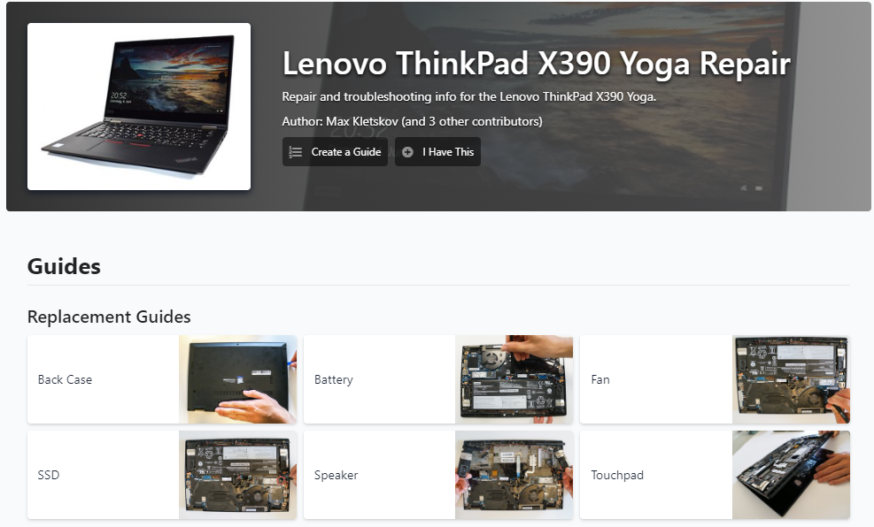

iFixit Project
One of the big projects for my Technical Writing class was the iFixit Project. For this project I worked in a group of four to create an online step-by-step guide on how repair a device. The device we chose was the Lenovo ThinkPad X390 Yoga. Our team created a device page, troubleshooting page, and repair guides on how to repair various components of the laptop.
The device page gives relevant information about the laptop and serves to direct users to specific repair guides. Click here to see the device page.
The troubleshooting page is used to pinpoint the exact problem wrong with their device. Click here to see the troubleshooting page.
The repair guides detail step-by-step on how to disassemble and repair components of the laptop. We created guides for the back case disassembly, battery, fan, SSD, speakers, and touch pad.